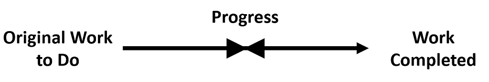
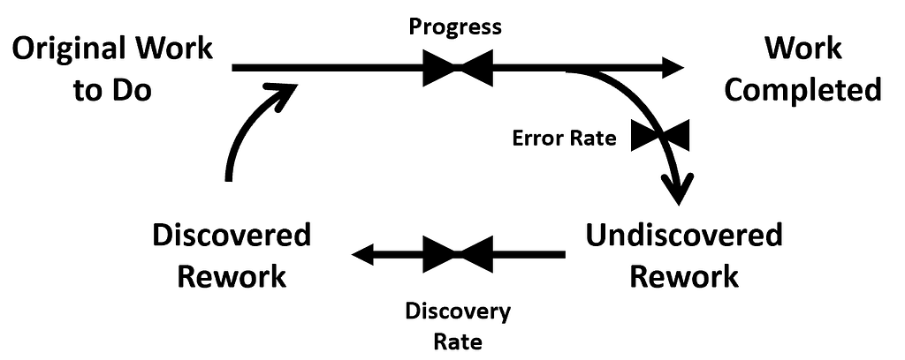
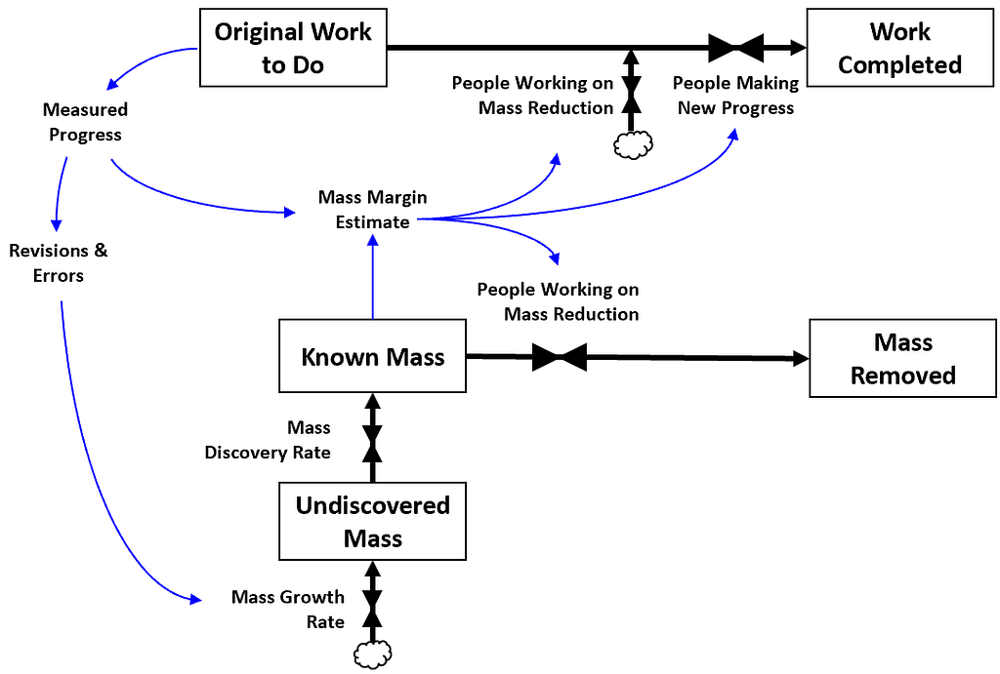
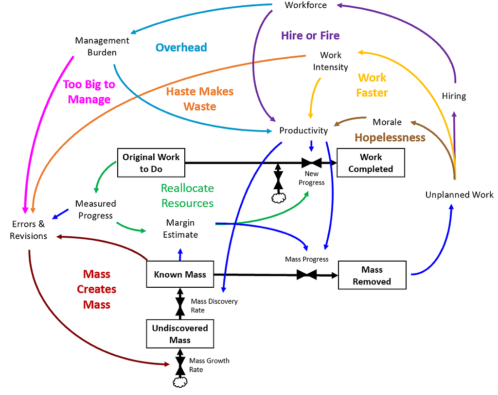
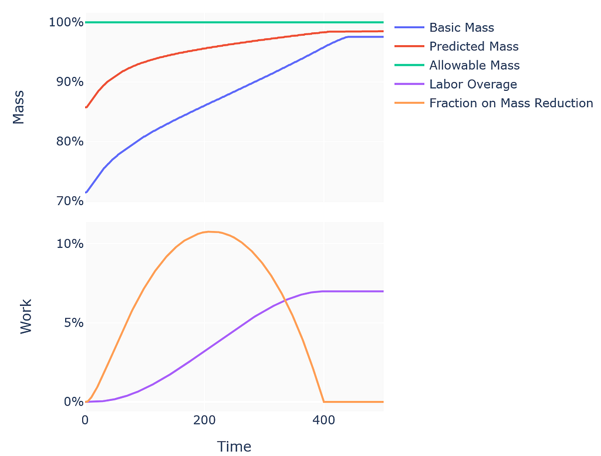
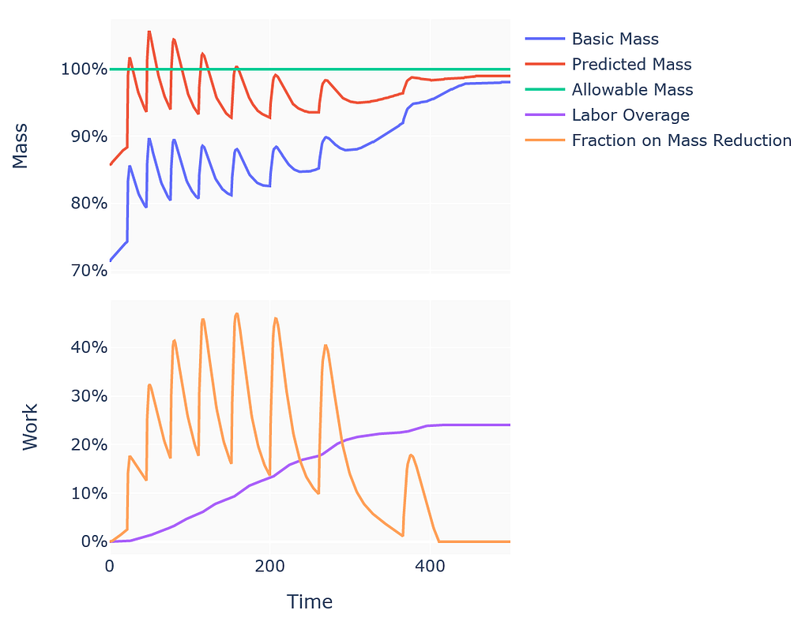
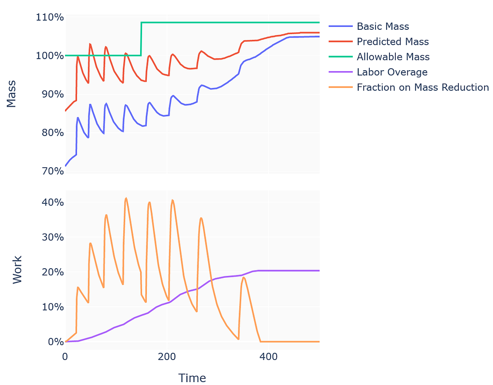

Why Your Rocket Will Gain Weight (and What to Do About It)
How much weight you gain depends on how you react when it shows up.
Everyone in aerospace knows weight is king. If it's too heavy, it doesn't fly. And we're still really bad at predicting how much new things will weigh.
For years I thought I knew why. On the SpaceShipTwo program at Virgin Galactic, we had mass growth problems, and I decided they came from bad estimates at the start. Lowball the weight early and you spend the rest of the program paying for it. So the fix seemed obvious. Make honest estimates, set generous margin from day one, and let the margin soak up the growth while the team focuses on making the thing work.
Then I actually got to test the theory. At Relativity Space I set the mass estimates and margins from the very beginning. I was going to get it right from the ground floor.
Turns out the estimates were fine. The theory was wrong.
How much weight you gain depends less on where you start and more on how you react when the weight shows up.
To be clear, good estimates still matter. Start with a bad one and you're in trouble no matter what you do. They just matter a lot less than I thought.
Work doesn't stay finished
To see why, you need a model of how design work actually happens. I really like models, because they drag our opinions about how the world works out of our heads and put them somewhere we can test and argue about them.
Here's the simplest one. Work is a flow.

Progress turns work-to-do into completed work. When work-to-do hits zero, you're done. You can reorder tasks and add people to go faster, but the total amount of work never changes.
Almost every project plan I've ever seen assumes this model. And it's wrong, because finished work doesn't stay finished. It needs revision. Tasks get handed to the people who depend on them before they're really done. And you usually don't find out something needs rework until a review, a test, or a build, often long after it was marked "complete."

This is called the Rework Cycle, and it's a much better picture of real projects. When a design changes partway through, the cost isn't only the change. It pulls people off other work and shifts the scope of everything around it, and that ripple can cost more than the change did.
Mass works the same way
Now apply this to the weight of a vehicle. To keep it simple, pretend the only kind of rework is the kind that adds mass. Split the Rework Cycle into a work flow and a mass flow, and you get what I'll call the Mass Cycle.

As design moves along, errors and revisions create mass you haven't found yet. You find it gradually, and your margin shrinks. When margin drops below some threshold, you pull people off new work and put them on mass reduction until margin recovers.
If that were the whole story, my old theory would hold. Hidden mass would depend only on how much design you'd done. Management decisions would change cost and schedule, but not how much mass you eventually had to take out. Start with good margin and you're fine.
That's exactly what I believed going into Relativity.
How you react changes how much you gain
Everyone knows management decisions have side effects, and they still surprise us every time. New people slow a team down before they speed it up. A weekly mass review helps, right up until it turns into a daily one. Cutting corners to hit a date creates work later.
So let's add those side effects to the model.

(Yes, it looks like a plate of spaghetti. Real programs are worse.)
As margin shrinks, more people go to mass reduction. That creates unplanned work and schedule pressure. Schedule pressure means working faster, hiring more people, and, if it goes on long enough, bad morale.
Working harder works for a while. Then fatigue sets in. Tired people are slower, make more mistakes, and are worse at finding the mass that's already hiding in the design.
Hiring helps too, with diminishing returns. More people means more progress, but also more management overhead, more errors, and more knowledge lost in handoffs.
And the heavier the vehicle gets, the bigger the errors get. As the known mass goes up, the unknown mass goes up with it. Mass creates mass.
Moving the goalposts makes you heavier
Boxes and arrows only get you so far, so I built a simulation. You might get to try five management strategies in an entire career, and you'd wait years to find out how each one went. A simulation lets you try fifty before lunch.1
I tracked five variables.
- Basic mass is the known mass.
- Predicted mass is how heavy we expect the vehicle to get, based on the basic mass.
- Allowable mass is the limit used to calculate margin.
- Labor overage is the labor spent above the original estimate.
- Fraction on mass reduction is the share of people working on taking mass out.
First, a sanity check
Start with the usual mental model, where mass growth depends only on design progress and how heavy the vehicle is. Just the Mass Cycle, no side effects.

The curve looks basically identical to the mass trend example in the AIAA standard for controlling the mass of space systems. Good. The model reproduces the textbook.
Then, reality
Real programs aren't that tidy. Mass shows up in chunks. Mistakes in early work surface late. Tests fail. Schedule pressure forces scope changes. There's a lag between a change and knowing what it did to the weight, and the pressure climbs as designs get released. Add all of that, and you can watch how a typical mass management process responds.
Spend your way out

To hold the schedule, the program hires more people for mass reduction and everyone works above normal capacity. Early surprises pull more effort into mass reduction, which finds more surprises. Eventually the surprises slow down and the vehicle finishes just under its allowable mass.
It works. It's also expensive. The labor overrun ends up around 24%.
Move the goalposts
The other common move is to raise the allowable mass. Programs do this when a fix looks too expensive or too slow. Here's the same simulation with the requirement relaxed partway through.

The schedule holds, and the labor overrun drops to about 20%. Final mass goes up 7%.
Oof. That's a much worse trade than it looks if you only count the work you skipped. Raising the target lets more mass into the design, and mass creates mass. You end up with more weight to take out later, when changes are a lot harder to make.
What I'd do differently
I've run this simulation through a lot of scenarios and checked the results against what I've seen on real programs. Four things stand out.
1. Manage the mass you haven't found yet
Every action you take to close the gap between performance and target has side effects. Those side effects drive mass growth more than you'd expect, and they're hard to predict.
So stop steering by remaining margin alone. Estimate how much mass you haven't found yet. Historical growth allowances aren't enough. You have to think about how growth in one area causes growth in another. Assume there's always some impact you haven't discovered, and hold people and money against it.
2. Deal with surprises immediately
Changes spread faster than you can measure them. A response sized to the mass you know about is too small.
Your real mass is almost always higher than your estimate, for two reasons. Mass takes time to discover. And predicted mass is based on how far along the design looks, which is further than it really is, because the rework hasn't shown up yet.
Later chances to cut mass are expensive. Tightening the target midway gets you only a fraction of the savings you'd expect. It still helps, and the earlier you do it, the fewer ripples you cause, because you don't have to move as many people around.
3. Start taking mass out before you think you need to
Predicted mass is a lagging indicator. By the time margin drops, the problem is already old. Put a steady fraction of effort on mass reduction from the start. You'll find mass sooner and get fewer big surprises late.
The same goes for schedule. A schedule with no room for rework builds up pressure late, and late pressure delays a program more than planning for the rework would have.
And no, this does not mean "do it right the first time." You're going to make mistakes either way. The goal is to find the rework early, before it spreads.
In the simulation, moderate pressure on schedule and mass works best. And when a big surprise shows up, it's usually worth putting all hands on it for a short time, so it doesn't turn into more hidden work.
4. Don't micromanage mass
When mass or schedule slip, the natural reaction is to ask for more progress reports. That slows the team down, which causes more delay and more mass growth, which triggers more reports. It's a loop that feeds itself.
Worse, staring at the problems you know about pulls attention away from finding the ones you don't. Moderate oversight gives the best balance of productivity and errors.
This isn't really about rockets
Swap mass for cloud spend, latency, or headcount, and you get the same loop. Any budget you set at the start of a project and then defend for two years behaves this way.
I went to Relativity to get the estimate right. Turns out the estimate was never the hard part. The hard part is what you do on the day the scale tells you something you don't want to hear.
- The usual caveat applies. A model like this is good for comparing strategies. It can't tell you what a particular vehicle will weigh, so treat the numbers as directions. ↩